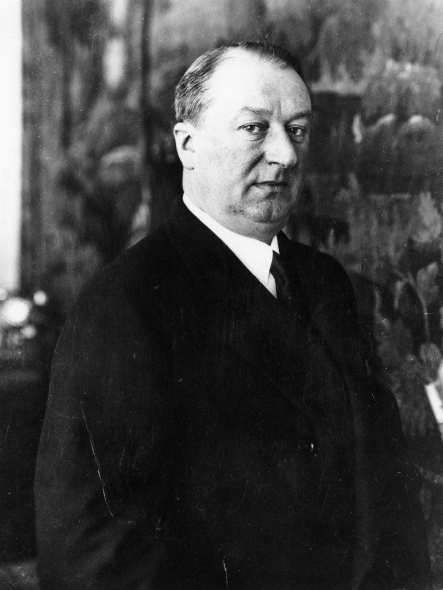
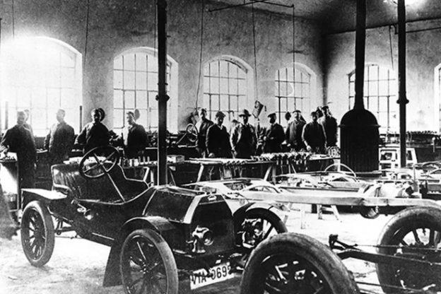
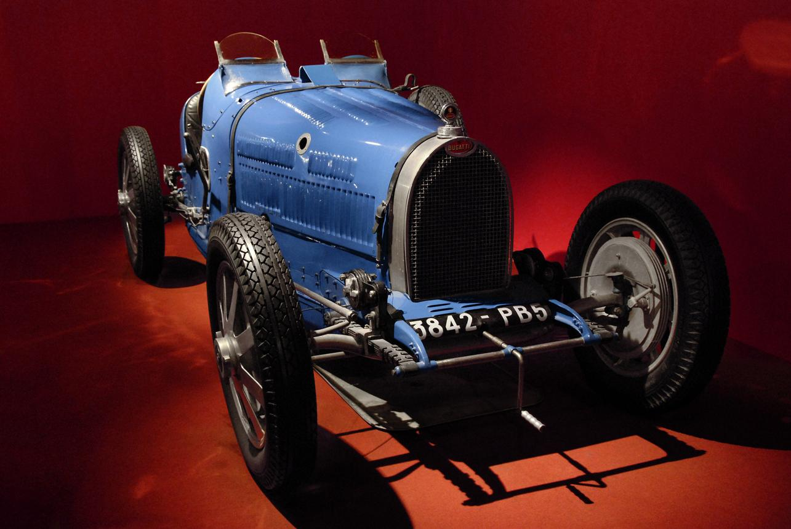
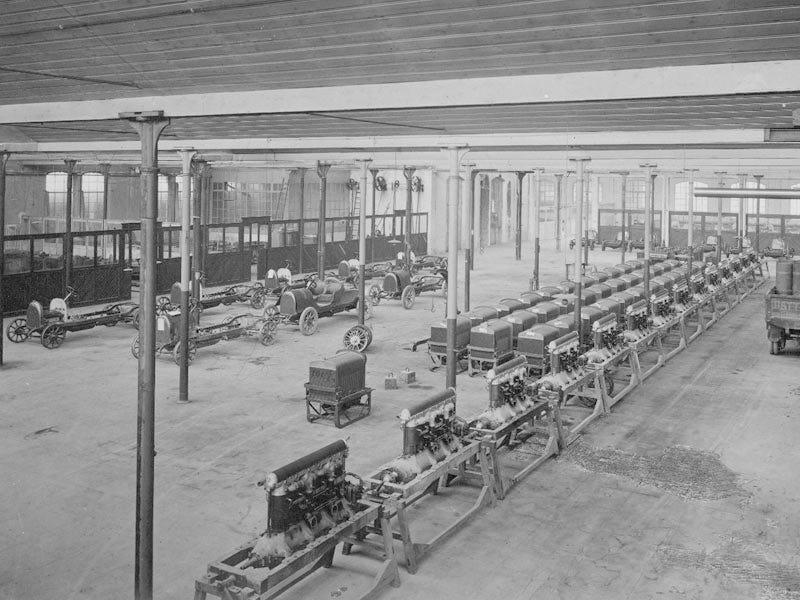
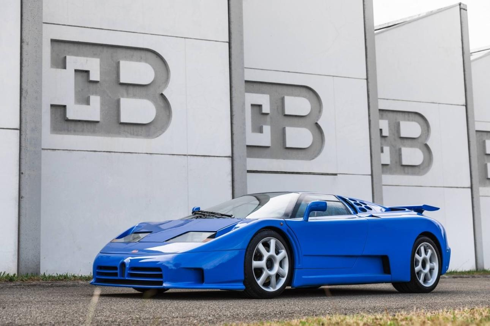
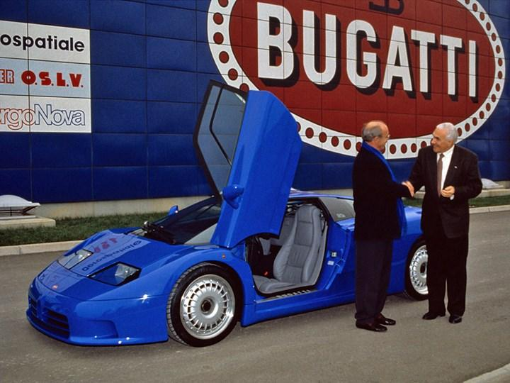
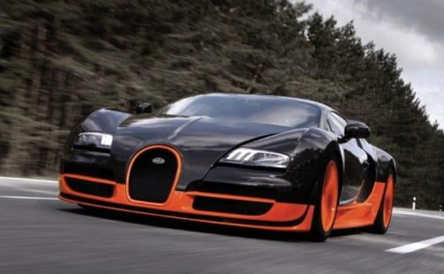
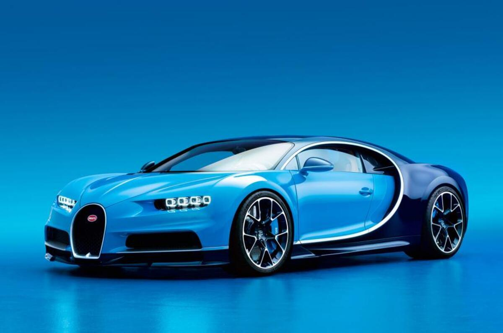
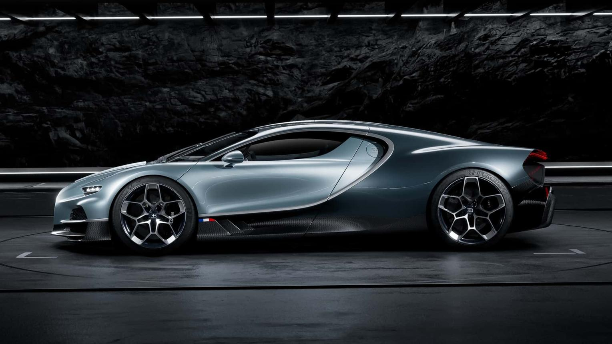
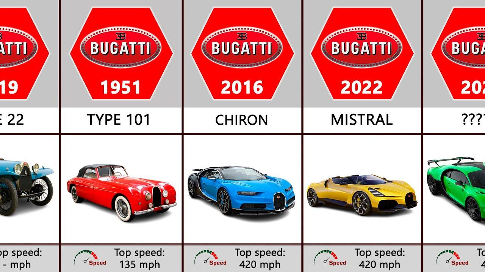

Ettore Bugatti naît le 15 septembre 1881 à Milan. Issu d'une famille d'artistes, il se passionne très jeune pour la mécanique. Dès l'âge de 17 ans, il construit ses premières voitures et travaille pour plusieurs constructeurs européens. Son rêve est de créer des automobiles qui soient à la fois rapides, élégantes et fabriquées comme des œuvres d'art.

En 1909, Ettore Bugatti fonde Bugatti Automobiles à Molsheim (qui faisait alors partie de l'Empire allemand). La première grande réussite de la marque est la Bugatti Type 13, une voiture légère, rapide et très innovante. Grâce à sa faible masse et à son excellent moteur, elle remporte rapidement plusieurs compétitions automobiles. Dès cette époque, Bugatti devient synonyme de qualité, de performance et de raffinement.

Les années 1920 et 1930 représentent l'âge d'or de Bugatti. La marque lance plusieurs modèles devenus légendaires :
Les Bugatti sont réputées pour leur design exceptionnel, leur finition artisanale et leurs performances remarquables.

En 1939, Jean Bugatti, considéré comme le successeur de son père, meurt tragiquement lors d'un essai automobile. La Seconde Guerre mondiale interrompt ensuite presque totalement les activités de la marque. Après la guerre, Bugatti ne retrouve jamais son succès d'avant-guerre. Ettore Bugatti décède en 1947, et l'entreprise cesse progressivement la production automobile avant de disparaître dans les années 1950.

En 1987, l'entrepreneur italien Romano Artioli rachète les droits de la marque et fonde Bugatti Automobili S.p.A. En 1991, il présente la spectaculaire EB110, conçue pour célébrer les 110 ans de la naissance d'Ettore Bugatti. La voiture impressionne avec :
Malgré ses qualités, les difficultés financières entraînent une nouvelle faillite en 1995.

En 1998, le Volkswagen Group rachète Bugatti. L'objectif est clair : construire la voiture de série la plus rapide du monde. D'importants investissements permettent de moderniser les installations historiques de Molsheim et de développer une nouvelle génération d'hypercars.

En 2005, Bugatti présente la Veyron 16.4. Elle possède :
En 2010, la Veyron Super Sport atteint 431 km/h, établissant un record mondial pour une voiture de série. La Veyron devient rapidement l'une des automobiles les plus célèbres de l'histoire.

En 2016, la Bugatti Chiron succède à la Veyron. Elle développe 1 500 chevaux grâce à une évolution du moteur W16. Par la suite, Bugatti lance plusieurs modèles exceptionnels :

Aujourd'hui, Bugatti fait partie de Bugatti Rimac, une entreprise créée en partenariat entre Rimac Group et le Porsche AG. Chaque Bugatti est assemblée à la main à Molsheim par des artisans hautement qualifiés. La marque produit seulement quelques dizaines de voitures par an, chacune valant plusieurs millions d'euros. Son objectif reste inchangé depuis Ettore Bugatti : construire les automobiles les plus performantes, les plus luxueuses et les plus exclusives du monde.

